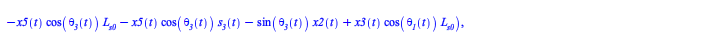

Reduce index by one [1]
Differentiate constraint not containing dot variables and save algebraic constraint for projection
| > | HIDDEN1 := [ALG[1],ALG[1]]:<%>; |
| (6.3.1.1) |
| > | diff(ALG[1],t);
diff(ALG[2],t); |
| (6.3.1.2) |
| > | ALG[1] := subs(SS_DIFF_TO_DOT,diff(ALG[1],t));
ALG[2] := subs(SS_DIFF_TO_DOT,diff(ALG[2],t)); |
 |
(6.3.1.3) |